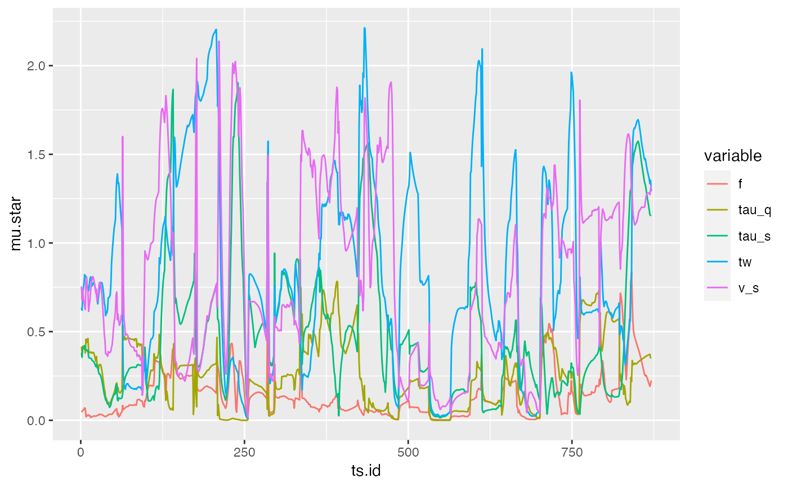
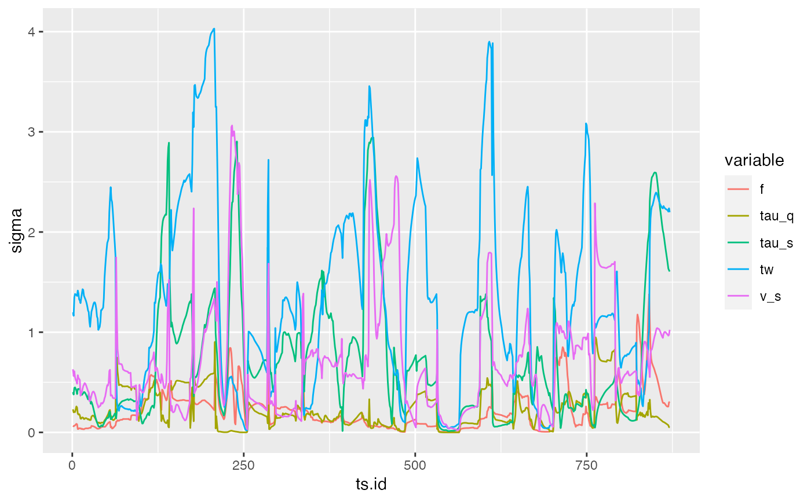

Generic method to evaluate sensitivity analysis methods in decoupled mode (see tell) on a time series of results, as produced for example by evalParsRollapply. See examples for more details.
tellTS( x, ts.matrix, fun, indices, parallel = hydromad.getOption("parallel")[["tellTS"]], ... )
| x | A sensitivity analysis object for which results still need to be provided. A typed list storing the state of the sensitivity study (parameters, data, estimates), as returned by sensitivity analyses objects constructors, such as morris, sobol2002, etc. |
|---|---|
| ts.matrix | A matrix of model responses, with each row corresponding to
the parameter sets identified in |
| fun | A function |
| indices | (Optional) Which time indices to use. By default, sensitivity
indices are calculated for all columns of |
| parallel | If "clusterApply", evaluate parameters in parallel using the
parallel or snow package. See |
| ... | Ignored by default implementation |
a data.frame with columns produced by fun
Herman, J. D., P. M. Reed, and T. Wagener. 2013. "Time-Varying Sensitivity Analysis Clarifies the Effects of Watershed Model Formulation on Model Behavior." Water Resources Research 49 (3): 1400-1414. doi: 10.1002/wrcr.20124
hydromad_sensitivity for sensitivity analysis on
static rather than time series model output, evalParsRollapply
to obtain parameter sets
Joseph Guillaume
library(sensitivity) ## Load data data(Cotter) obs <- Cotter[1:1000] ## Define rainfall-runoff model structure model.str <- hydromad(obs, sma = "cwi", routing = "expuh", tau_q = c(0, 2), tau_s = c(2, 100), v_s = c(0, 1) ) ## Set the random seed to obtain replicable results set.seed(19) ## Setup Morris Sensitivity analysis incomplete <- morris( ## Names of factors/parameters factors = names(getFreeParsRanges(model.str)), ## Number of repetitions r = 4, ## List specifying design type and its parameters design = list(type = "oat", levels = 10, grid.jump = 2), ## Minimum value of each non-fixed parameter binf = sapply(getFreeParsRanges(model.str), min), ## Maximum value of each non-fixed parameter bsup = sapply(getFreeParsRanges(model.str), max) ) # Calculate rolling time series of objective for each parameter set, # keeping results in memory runs <- evalParsRollapply(incomplete$X, model.str, objective = ~ hmadstat("r.squared")(Q, X) / (2 - hmadstat("r.squared")(Q, X)), parallel = "none", filehash.name = NULL )#> Running 24 model evaluations with parallelisation='none'# Calculate Morris elementary effects for each timestep sens <- tellTS(incomplete, runs, parallel = "none")#> Calculating sensitivity on 871 data points with parallelisation#> #>#> #> #>## And of standard deviation of elementary effects qplot(x = ts.id, y = sigma, colour = variable, data = sens, geom = "line")###################################################################### if (FALSE) { ## Sobol indices ### Setup parallelisation library(parallel) hydromad.options("parallel" = list("evalParsRollapply" = "clusterApply")) hydromad.options("parallel" = list("tellTS" = "clusterApply")) cl <- makeCluster(3) clusterEvalQ(cl, library(hydromad)) ### Create sobol design n <- 1000 ## Set number of samples desired X1 <- parameterSets(getFreeParsRanges(model.str), n) X2 <- parameterSets(getFreeParsRanges(model.str), n) incomplete <- sobol2002(model = NULL, X1 = X1, X2 = X2, nboot = 100) ### Run model for each parameter set, storing result to disk system.time(runs <- evalParsRollapply(incomplete$X, model.str, objective = hmadstat("r.squared"), parallel = "clusterApply" )) ## Calculate sobol indices for each timestep with stored runs system.time(TSI <- tellTS(incomplete, runs)) ## Plot time series of sensitivities library(ggplot2) qplot(x = ts.id, y = original, colour = variable, data = TSI, geom = "line") ## Time series plot facetted by variable showing bootstrapped confidence interval ggplot(data = TSI) + geom_ribbon(aes( x = ts.id, ymin = get("min. c.i."), ymax = get("max. c.i.") ), fill = "grey") + geom_line(aes(x = ts.id, y = original)) + facet_wrap(~variable) }